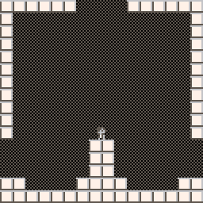
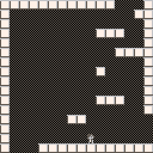

21 November 2018
First Creative Blog
This is something that I have been interested in doing for a while. When I studied abroad in Europe, I wrote a semi-regular blog about my travels, and while I enjoyed writing it and it was interesting to reread, I never felt that I had anything worthwhile to talk about once I returned home. However, I have now embraced my inner dweeb™ and I've been creating a number of personal projects. I think it would be fun to write about what I've been working on, cool things that I've found and whatnot for posterity. If I actually continue and make this a regular thing, I'll hopefully get around to making this website a little less hideous as well.
It is Thanksgiving week, and I have returned to the land of Nebraska. Rather than finishing up my final projects and assignments for the semester, I am writing a stupid blog that nobody will ever read, and working on some of my own personal things. Over the summer I made a Pico-8 game called Piconian, which actually got a bit of attention. I was really proud of it and enjoyed making it, but I haven't really thought of another idea to make another game out of. A few days ago, I finally came up with the idea for another game, which I'm calling Spectra (for now). It's basically a combination of two ideas I've had for a while: making a Metroidvania-esque game, and a game that begins in monochrome and progressively gains more coloration as the game progresses. I have the basic structure and gameplay completed. The next steps are to work on the level design and adding new mechanics, which is surprising more difficult than I anticipated. This game is also going to be rather artsy-fartsy, so it's going to require better sprite work than I had for Piconian. I've completed a prototype for the title logo, and my lack of artistic abilities are clear.
 Speaking of terrible artistic abilities, earlier this week I wrote some scripts for the pixel art software Aseprite. I made two new scripts. The first asks the user for a color and then generates a bunch of lighter and darker shades, while the second takes a color and gives its color compliment. None of them are very sophisticated, but I think they're somewhat useful, and an artist friend of mine (eemie, who made the gif of me on the homepage) said they were of use to her, so that's one person more than I thought would ever use these.
I have a few other projects that aren't very far along, such as making a Game Boy emulator that I've been thinking about for 6 months. I'm thinking about making this a weekly thing if I can, and just writing about the projects I'm working on. This is rather late in the semester, so a bit of time will go to finishing up my projects and assignments, especially since I have been putting them off a bit. I also feel like I've been neglecting the website somewhat. I honestly like the look of the site, especially I did all of the styling and everything myself, but it's not exactly super easy on the eyes, especially for reading a blog-type thing. Hopefully that will improve as well. Or not, whatever.